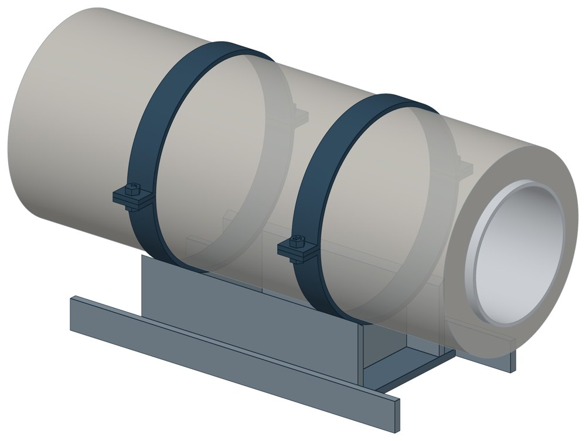

Направляющие опоры НПО
НТС 65-06 вып. 1. Dн 108–1020 мм, масса 42,87–388,86 кг.

- Диаметр трубы Dн
- 108–1020 мм
- Документ
- НТС 65-06 вып. 1
- Исполнений
- 12
- Масса
- 42,87–388,86 кг
- 3D-модели
- у всех исполнений (условные: общий вид по габаритам)
Таблица исполнений НПО
| Обозначение | Код ПРОМБУРГ | Dнмм | Думм | Диаметр Dизмм | Рекомендуемый пролетм | Ширина Вмм | Высота Нмм | Длина Lмм | Массакг | 3D |
|---|---|---|---|---|---|---|---|---|---|---|
| НПО-100 | ПБ-НПО-0108-1 | 108 | 100 | 180 | 4 | 200 | 210 | 500 | 42,87 | 3D |
| НПО-125 | ПБ-НПО-0133-1 | 133 | 125 | 225 | 4 | 240 | 234 | 500 | 51,3 | 3D |
| НПО-150 | ПБ-НПО-0159-1 | 159 | 150 | 250 | 5,6 | 240 | 246 | 500 | 53,14 | 3D |
| НПО-200 | ПБ-НПО-0219-1 | 219 | 200 | 315 | 7,2 | 300 | 281 | 500 | 64,18 | 3D |
| НПО-250 | ПБ-НПО-0273-1 | 273 | 250 | 400 | 8,8 | 320 | 324 | 500 | 77,24 | 3D |
| НПО-300 | ПБ-НПО-0325-1 | 325 | 300 | 450 | 9,6 | 320 | 349,5 | 500 | 82,54 | 3D |
| НПО-400 | ПБ-НПО-0426-1 | 426 | 400 | 560 | 11,2 | 420 | 406 | 780 | 152,57 | 3D |
| НПО-500 | ПБ-НПО-0530-1 | 530 | 500 | 710 | 11,2 | 420 | 472 | 780 | 166,39 | 3D |
| НПО-600 | ПБ-НПО-0630-1 | 630 | 600 | 800 | 12 | 560 | 530 | 880 | 210,7 | 3D |
| НПО-700 | ПБ-НПО-0720-1 | 720 | 700 | 900 | 12 | 560 | 568 | 880 | 253,4 | 3D |
| НПО-800 | ПБ-НПО-0820-1 | 820 | 800 | 1000 | 12 | 660 | 636 | 1080 | 338,05 | 3D |
| НПО-1000 | ПБ-НПО-1020-1 | 1020 | 1000 | 1200 | 16 | 760 | 740 | 1080 | 388,86 | 3D |
Чтобы заказать, сообщите обозначение и код ПРОМБУРГ: +7 (499) 325-51-35, promburg@yandex.ru.
Нормативные документы
- НТС 65-06 вып. 1 Опорные конструкции трубопроводов тепловых сетей. Выпуск 1. Подвижные и направляющие опоры для канальной прокладки теплопроводов Ду=100-1000 мм в ППУ изоляции в полиэтиленовой оболочке. Рабочие чертежи — документ, по которому изготавливается изделие
Связанные позиции
- Соседний тип: ПО — Подвижные опоры ПО
На трубу Dн 108–1020 мм в каталоге
Позиции каталога с исполнениями на те же наружные диаметры трубы.
Детали трубопровода
- Отвод стальной крутоизогнутый 90° общих Dн: 12
- Фланец стальной воротниковый общих Dн: 12
- Фланец стальной плоский приварной общих Dн: 12
- Отвод стальной крутоизогнутый 90°, 09Г2С общих Dн: 11
- Заглушка стальная эллиптическая общих Dн: 9
- Переход стальной концентрический общих Dн: 8
- Днище стальное эллиптическое общих Dн: 6
- Отвод нержавеющий 90° общих Dн: 1
Компенсаторы
- Компенсатор сильфонный 2ОПКР общих Dн: 12
- Компенсатор сильфонный 2ОПКР (ИЯНШ) 2ОПКРИ общих Dн: 12
- Компенсатор сильфонный 2СКУ.М 2СКУМ общих Dн: 12
- Компенсатор сильфонный 2СКУ.М (ИЯНШ) 2СКУМИ общих Dн: 12
- Компенсатор сильфонный 2СКУ.ППМ 2СКУППМ общих Dн: 12
- Компенсатор сильфонный 2СКУ.ППМ (ИЯНШ) 2СКУППМИ общих Dн: 12
- Компенсатор сильфонный 2СКУ.ППУ 2СКУППУ общих Dн: 12
- Компенсатор сильфонный 2СКУ.ППУ (ИЯНШ) 2СКУППУИ общих Dн: 12
- Компенсатор сильфонный 2СКУ.ППУ/ОЦ (ИЯНШ) 2СКУППУОЦИ общих Dн: 12
- Компенсатор сильфонный КС общих Dн: 12
- Компенсатор сильфонный КСО общих Dн: 12
- Компенсатор сильфонный КСО (ИЯНШ) КСОИ общих Dн: 12
- Компенсатор сильфонный КСОФ общих Dн: 12
- Компенсатор сильфонный ОПКР общих Dн: 12
И ещё 20 типов — в оглавлении каталога.
Другие опоры и подвески
- Опора неподвижная двухупорная ТС-660 общих Dн: 12
- Опора неподвижная щитовая ТС-666 общих Dн: 12
- Опора неподвижная хомутовая бескорпусная ТС-669 общих Dн: 12
- Опора скользящая хомутовая ТС-626 общих Dн: 12
- Опоры сварных отводов ТС-631 общих Dн: 12
- Опорные плиты диэлектрические ТС-632 общих Dн: 12
- Подвижные опоры ОПМ общих Dн: 12
- Подвижные опоры ПО общих Dн: 12
- Опоры неподвижные ППУ-ОЦ (ПЭ) ППУ неподвижная общих Dн: 12
- Опоры скользящие ППУ-ПЭ(ОЦ) ППУ скользящая общих Dн: 12
И ещё 96 типов — в оглавлении каталога.
Другие типы раздела
Опоры труб в ППУ-изоляции (СПО, ФСО, НТС 65-06, ГОСТ 30732)
- Подвижные опоры ОПМ
- Подвижные опоры ПО
- Опоры неподвижные ППУ-ОЦ (ПЭ) ППУ неподвижная
- Опоры скользящие ППУ-ПЭ(ОЦ) ППУ скользящая
- Опоры хомутовые скользящие СПО для труб ППУ
- Опоры хомутовые скользящие СПОк для труб в ППУ
- Опоры хомутовые скользящие подкладные СПОн для ППУ труб
- Опоры хомутовые скользящие ФСО1 для труб в ППУ
- Опоры хомутовые скользящие ФСО2 для ППУ
Частые вопросы
Чем неподвижная опора отличается от подвижной?
Неподвижная закрепляет трубу в одной точке и принимает усилия от температурного расширения, давления и трения. Подвижная держит вес трубы и даёт ей перемещаться при нагреве. Неподвижные делят трассу на участки компенсации, подвижные стоят между ними. Место и тип каждой опоры задаёт проект.
На каком расстоянии ставить опоры?
По СП 124.13330.2012 (п. 10.5) максимальные расстояния между подвижными опорами на прямых участках определяют расчётом на прочность и по допускаемому прогибу. Готового шага «по диаметру» норматив не даёт: пролёт задаёт проект.
По какому диаметру подбирать — Dн или Ду?
По наружному диаметру трубы Dн: именно он стоит в таблицах серии. Ду — условный проход, округлённая величина: Ду 100 соответствует Dн 108. В заявке указывайте Dн и толщину стенки трубы.
Из какой стали изготавливаются опоры?
По рабочим чертежам серии листовые детали — Ст3сп5 ГОСТ 14637-89, хомуты из круга — сталь 20 ГОСТ 1050-88. Для районов с низкой расчётной температурой воздуха применяется низколегированная сталь, в том числе 09Г2С; размеры опор при этом не меняются. В заявке укажите расчётную температуру наружного воздуха.
Что указать в заявке, чтобы получить цену без уточнений?
Обозначение с номером исполнения или код ПБ, количество, Dн и стенку трубы, расчётную температуру наружного воздуха, покрытие, город доставки и желаемый срок. Кнопка «В заявку» в таблице собирает спецификацию, которую можно выгрузить в Excel или отправить письмом.